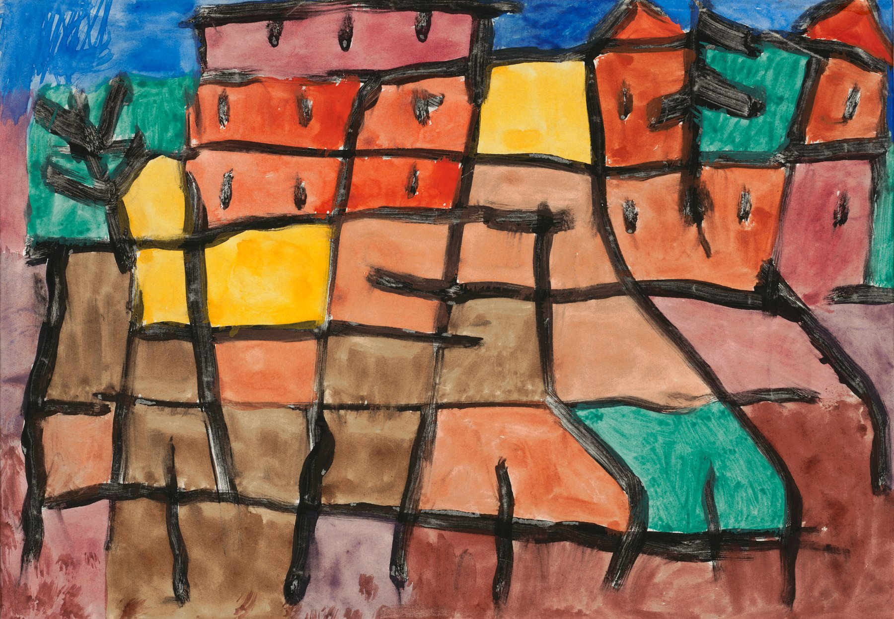
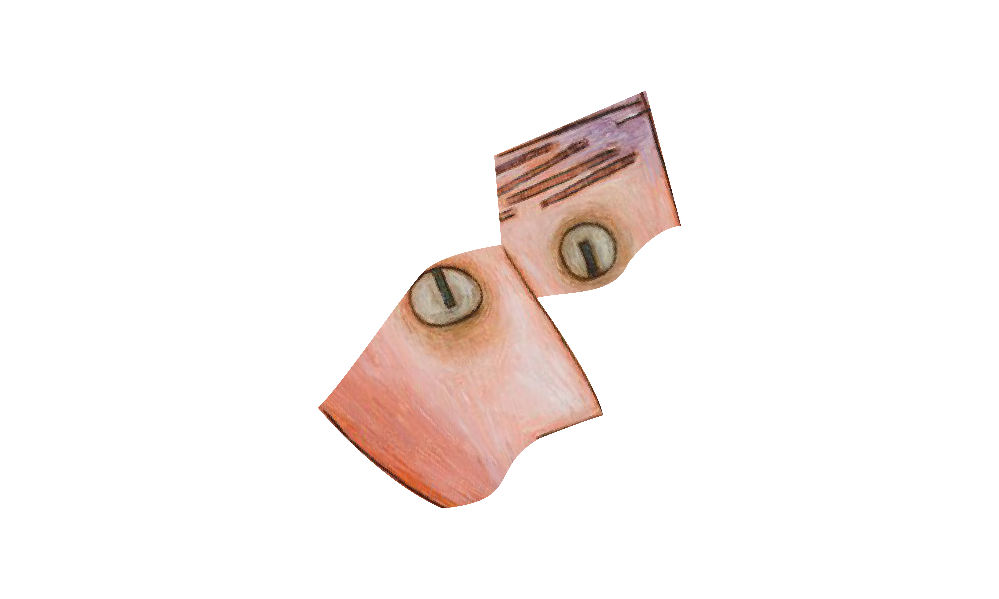

Born 1879 to a family of musicians in Switzerland, Klee soon picked up painting and joined the Kandinsky’s expressionist group, Blaue Reiter (Blue Rider), applying cubist and fauvist principles.
Ater his trip to Tunisia, Klee departed from traditional forms, instead gesturing towards color as a representative composition. His expressive titles pushed towards poetic, announcing a prevelant message to audiences, whether comedic or lonesome.

Born 1879 to a family of musicians in Switzerland, Klee soon picked up painting and joined the Kandinsky’s expressionist group, Blaue Reiter (Blue Rider), applying cubist and fauvist principles.
In his early years, Klee found influence in the works of Braque and Picasso. His paintings adopted these trendy styles through formal expressions of buildings and landscapes.